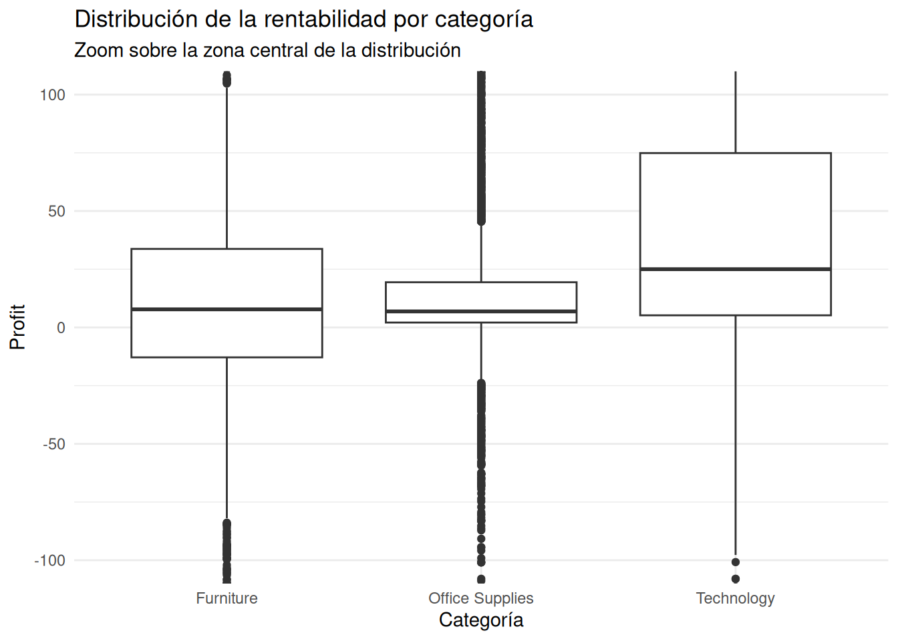
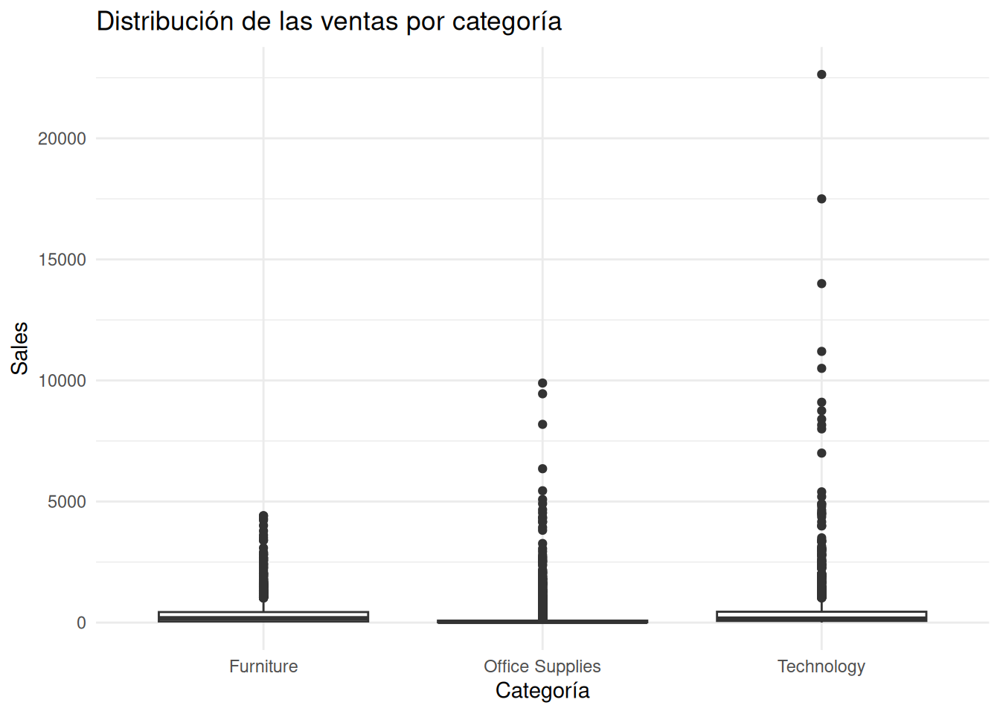
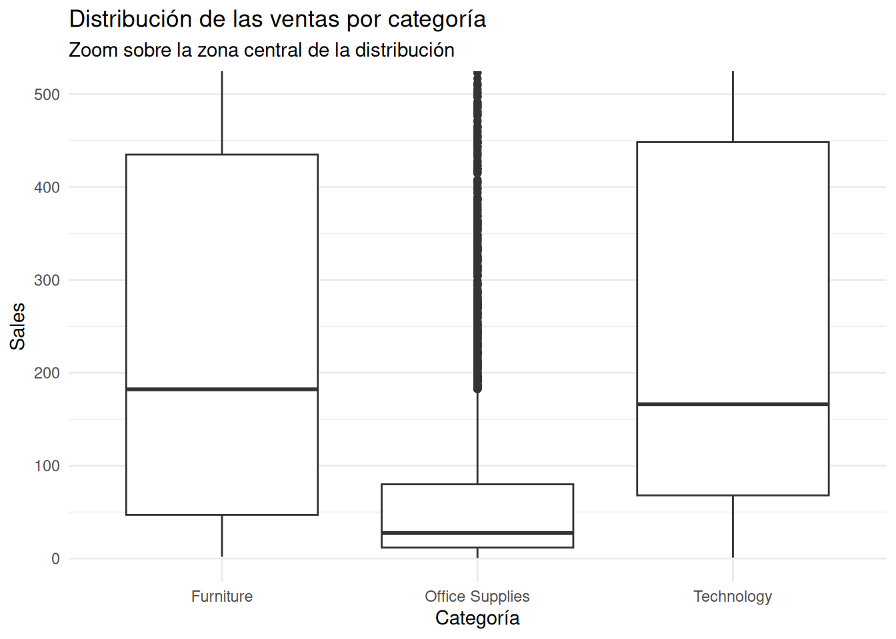
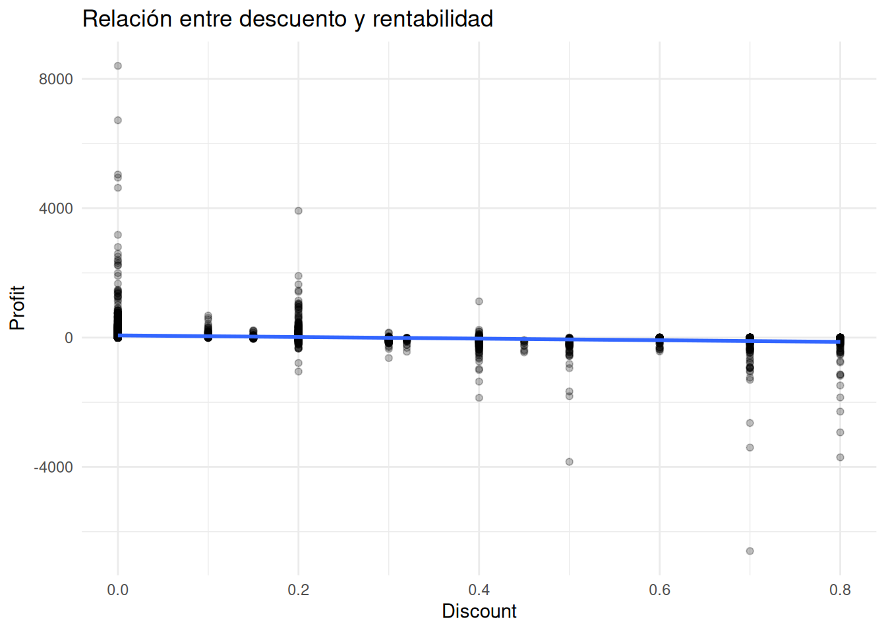
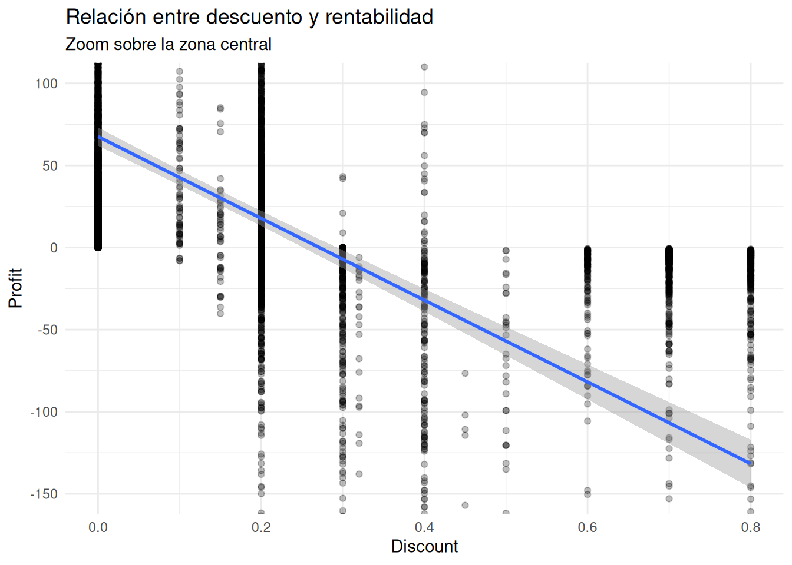
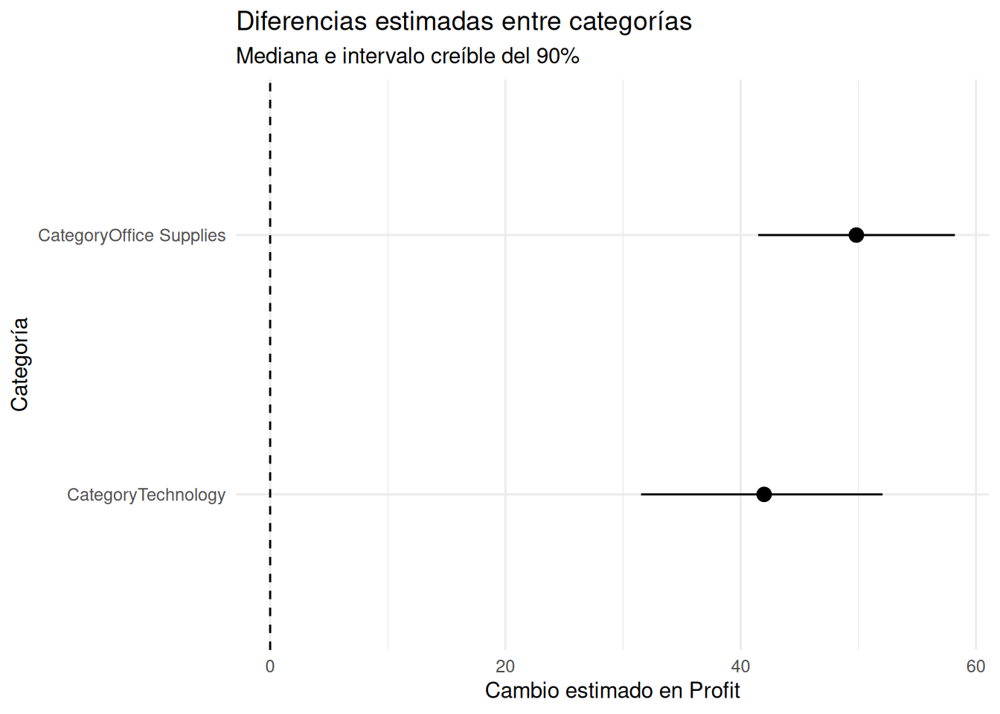
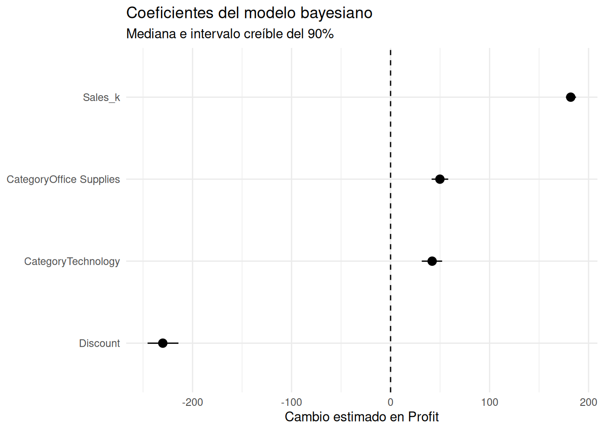

¿Las diferencias entre categorías siguen siendo plausibles después de considerar otras variables?
Retail
Finanzas
Visualización
Un modelo bayesiano con R y rstanarm permite comparar la rentabilidad de las categorías de Superstore controlando por ventas y descuentos.
Una categoría puede parecer más rentable simplemente porque genera ventas más altas.
Pero eso plantea una pregunta importante:
¿Las diferencias de rentabilidad entre categorías siguen siendo plausibles cuando tenemos en cuenta también las ventas y los descuentos?
Esta es una pregunta ligeramente diferente a las que hemos planteado hasta ahora.
Ya no queremos solamente describir qué está ocurriendo en Superstore.
Ahora queremos comenzar a explorar qué factores parecen estar asociados con las diferencias que observamos.
Para ello utilizaremos una regresión lineal bayesiana con rstanarm.
El objetivo no será encontrar una “verdad definitiva” sobre la rentabilidad, sino estimar qué diferencias siguen siendo plausibles después de considerar simultáneamente varias variables.
La pregunta de negocio
Imaginemos que estamos analizando la rentabilidad de una tienda que comercializa tres grandes categorías:
- Furniture
- Office Supplies
- Technology
A primera vista, podríamos comparar simplemente el Profit promedio o mediano de cada categoría.
Pero existe un problema.
Una categoría puede tener mayor rentabilidad simplemente porque sus pedidos tienen un mayor volumen de ventas.
De la misma manera, una categoría podría parecer menos rentable porque recibe descuentos más elevados.
Por tanto, una comparación directa entre categorías puede mezclar varios efectos.
La pregunta que queremos responder es:
Después de considerar el nivel de ventas y el descuento aplicado, ¿las diferencias entre categorías siguen siendo plausibles?
Para analizarlo utilizaremos:
Profitcomo medida de rentabilidad;Categorycomo variable categórica;Salescomo medida del volumen de ventas;Discountcomo medida del descuento aplicado.
Comprendiendo el problema
Antes de construir el modelo, conviene observar qué ocurre en los datos.
No queremos comenzar suponiendo que existe una diferencia entre categorías.
Primero queremos verla.
Rentabilidad por categoría
Nuestro primer gráfico compara la distribución de Profit entre las tres categorías.
La primera impresión está dominada por algunos valores extremos.
Technology presenta una dispersión considerable, con operaciones que superan los 8.000 dólares de ganancia y pérdidas superiores a los 6.000 dólares.
Office Supplies también presenta una dispersión importante, con algunos valores extremos tanto positivos como negativos.
Furniture presenta una dispersión menor en comparación con las otras dos categorías.
Sin embargo, cuando observamos todo el rango de Profit, las diferencias en las zonas centrales del gráfico son difíciles de apreciar.
Por eso hacemos un segundo gráfico.

El zoom permite observar mejor las diferencias centrales.
La mediana de Technology se encuentra alrededor de 50 dólares, mientras que Furniture y Office Supplies presentan medianas cercanas a 10 dólares.
También observamos una mayor presencia de valores negativos dentro de la distribución central de Furniture.
Esto resulta interesante.
Pero todavía no podemos concluir que Technology sea intrínsecamente más rentable.
Una posible explicación es que los pedidos de Technology tengan valores de venta diferentes.
Necesitamos mirar las ventas.
¿Las categorías venden lo mismo?
Ahora observemos la distribución de Sales.

Aquí también encontramos algunos valores extremos.
Technology presenta operaciones con ventas superiores a 20.000 dólares.
Office Supplies llega a valores cercanos a 10.000 dólares, mientras que Furniture presenta algunas operaciones próximas a 5.000 dólares.
Pero, nuevamente, los valores extremos dificultan la comparación de la zona central.

Aquí aparece un resultado interesante.
La mediana de Sales es mayor en Furniture, con aproximadamente 180 dólares, seguida de Technology, con unos 170 dólares.
Office Supplies presenta una mediana considerablemente menor, cercana a 20 dólares.
Esto cambia nuestra interpretación inicial.
Furniture tiene una de las mayores ventas típicas, pero no parece tener una rentabilidad equivalente.
Por tanto, ventas y rentabilidad no son exactamente la misma historia.
También necesitamos considerar una tercera variable: el descuento.
¿Qué relación existe entre descuento y rentabilidad?
Los descuentos pueden ayudar a generar ventas, pero también pueden reducir el margen disponible para obtener ganancias.
Observemos la relación entre Discount y Profit.

La relación general parece negativa, aunque no especialmente intensa.
Con descuentos bajos, especialmente cuando el descuento es cero, encontramos más observaciones con ganancias que con pérdidas.
A medida que aumenta el descuento, la distribución de la rentabilidad parece desplazarse hacia valores menores.
El patrón se aprecia mejor haciendo zoom.

La línea de tendencia sugiere una relación negativa.
En términos aproximados, cuando el descuento es cero, la rentabilidad se concentra alrededor de valores positivos.
Cuando el descuento alcanza aproximadamente el 30 %, la tendencia se aproxima a cero.
Con descuentos elevados, la rentabilidad tiende a desplazarse hacia valores negativos.
Esto no significa que cada descuento elevado produzca pérdidas.
Hay mucha dispersión alrededor de la tendencia.
Pero sí proporciona una señal importante:
el nivel de descuento parece estar asociado con una menor rentabilidad.
Ahora podemos plantear el modelo.
Construyendo el modelo
Hasta ahora hemos observado las variables por separado.
Pero nuestro problema de negocio requiere analizarlas simultáneamente.
Queremos estimar:
¿Qué diferencia de rentabilidad permanece asociada con cada categoría después de considerar las ventas y el descuento?
Para ello utilizaremos una regresión lineal bayesiana.
Nuestro modelo será:
Profit ~ Category + Sales + DiscountExiste un pequeño detalle técnico.
Las ventas están expresadas en dólares y pueden alcanzar valores grandes. Para facilitar la interpretación del coeficiente, las expresaremos en miles de dólares.
Ahora construimos el modelo.
La categoría Furniture funciona como categoría de referencia.
Esto significa que los coeficientes de Office Supplies y Technology representan diferencias respecto a Furniture.
El modelo no está diciendo simplemente cuánto gana cada categoría.
Está estimando cuánto cambia el Profit asociado con cada variable manteniendo constantes las demás variables incluidas en el modelo.
Ese detalle es fundamental.
¿Qué aprendió el modelo?
El resultado central del modelo fue:
| Variable | Mediana | Intervalo creíble 90 % |
|---|---|---|
| Office Supplies | 49,8 | 41,5 a 58,2 |
| Technology | 42,0 | 31,5 a 52,1 |
| Sales_k | 182,0 | 177,2 a 187,3 |
| Discount | -230,1 | -245,4 a -214,3 |
Estos valores representan distribuciones posteriores.
En lugar de producir un único número como si fuera perfectamente conocido, el modelo proporciona un valor central acompañado por un intervalo que representa incertidumbre.
Las diferencias entre categorías
# A tibble: 6 × 4
Variable Limite_inferior Limite_superior Mediana
<chr> <dbl> <dbl> <dbl>
1 (Intercept) -23.1 -7.16 -15.0
2 CategoryOffice Supplies 41.5 58.2 49.8
3 CategoryTechnology 31.5 52.1 42.0
4 Sales_k 177. 187. 182.
5 Discount -245. -214. -230.
6 sigma 197. 202. 199. Comencemos por la pregunta principal.

La imagen es bastante clara.
El modelo estima una diferencia positiva para ambas categorías respecto a Furniture.
Para Office Supplies, la mediana es de aproximadamente 49,8 dólares, con un intervalo creíble del 90 % entre 41,5 y 58,2 dólares.
Para Technology, la mediana es de aproximadamente 42,0 dólares, con un intervalo entre 31,5 y 52,1 dólares.
Lo importante no es solamente que las medianas sean positivas.
También importa que los intervalos se mantienen claramente por encima de cero.
La evidencia del modelo es, por tanto, compatible con una diferencia positiva de rentabilidad para ambas categorías respecto a Furniture, después de considerar las ventas y el descuento.
Pero hay un detalle particularmente interesante:
Office Supplies presenta una diferencia estimada ligeramente mayor que Technology.
Esto contrasta con la impresión inicial que podíamos obtener observando únicamente las distribuciones de Profit.
El modelo nos está ayudando a separar parcialmente la comparación entre categorías de las diferencias asociadas con las ventas y los descuentos.
Ventas y rentabilidad
El coeficiente de Sales_k tiene una mediana de aproximadamente 182 dólares.
Su intervalo creíble del 90 % va desde 177,2 hasta 187,3 dólares.
Recordemos que Sales_k representa miles de dólares.
Por tanto, bajo las condiciones del modelo:
por cada 1.000 dólares adicionales de ventas, el Profit aumenta aproximadamente 182 dólares en términos de la relación estimada por el modelo, manteniendo constantes la categoría y el descuento.
El intervalo creíble indica que valores aproximadamente entre 177 y 187 dólares siguen siendo compatibles con la distribución posterior del efecto.
Este resultado tiene una incertidumbre relativamente pequeña en comparación con otros coeficientes del modelo.
El papel del descuento
El resultado para Discount es particularmente interesante.
La mediana es:
−230,1 dólares
y el intervalo creíble del 90 % va aproximadamente desde:
−245,4 hasta −214,3 dólares.
Pero debemos tener cuidado con la escala.
Discount está expresado como proporción.
Por ejemplo:
0,10 = 10 %
0,20 = 20 %
0,50 = 50 %
1,00 = 100 %Por tanto, el coeficiente de −230 dólares corresponde a un cambio completo de 100 puntos porcentuales de descuento.
Para facilitar la interpretación:
Un aumento de 10 puntos porcentuales en el descuento está asociado con una disminución aproximada de 23 dólares en Profit, manteniendo constantes las ventas y la categoría.
Este resultado es coherente con lo que observamos anteriormente en el gráfico exploratorio.
El análisis visual sugería una relación negativa entre descuento y rentabilidad.
El modelo permite ahora estimar esa relación mientras considera simultáneamente las otras variables incluidas.
Una forma más clara de mirar todos los efectos
Podemos reunir los coeficientes principales en un solo gráfico.

Este gráfico resume buena parte de la historia.
Los dos efectos asociados con las categorías son positivos.
El efecto de las ventas también es positivo.
El efecto del descuento es claramente negativo.
Y los intervalos son suficientemente estrechos como para que la dirección de estos efectos sea bastante clara dentro del modelo.
¿Qué ocurre con la incertidumbre que permanece?
El modelo también estima un parámetro llamado sigma.
Su mediana es aproximadamente:
199 dólares
con un intervalo creíble del 90 % entre aproximadamente 196,6 y 201,5 dólares.
No debemos interpretar este valor como “199 dólares de ganancias que no pueden explicarse”.
Sigma representa la escala de la variabilidad residual del modelo.
En términos sencillos:
Incluso después de considerar categoría, ventas y descuento, los valores reales de Profit todavía presentan una variabilidad considerable alrededor de las predicciones del modelo.
Esto es importante.
Nuestro modelo identifica patrones claros, pero no explica toda la variación existente en la rentabilidad.
Puede haber otros factores relevantes que no estamos incluyendo:
- producto específico;
- región;
- cliente;
- costos;
- cantidad de unidades;
- fechas;
- promociones;
- condiciones comerciales;
- u otras características de cada pedido.
Por eso un modelo de este tipo no debe interpretarse como una explicación completa del negocio.
Es una herramienta para reducir parte de la incertidumbre y comprender mejor determinadas relaciones.
¿Qué aprendimos?
Volvamos a nuestra pregunta inicial:
¿Las diferencias entre categorías siguen siendo plausibles después de considerar otras variables?
La respuesta proporcionada por este modelo es sí.
Después de considerar simultáneamente las ventas y el descuento, las dos categorías presentan diferencias positivas respecto a Furniture.
La diferencia estimada es aproximadamente:
- 50 dólares para Office Supplies;
- 42 dólares para Technology.
Además:
- mayores ventas están asociadas con mayor Profit;
- mayores descuentos están asociados con menor Profit;
- existe todavía una variabilidad residual importante.
Esto modifica nuestra interpretación inicial.
Furniture presentaba una mediana de ventas relativamente alta, pero su rentabilidad central era menor.
El modelo sugiere que la categoría continúa presentando una rentabilidad menor incluso después de considerar el nivel de ventas y el descuento.
¿Qué haría un analista con esta información?
Aquí es donde el análisis comienza a convertirse en Business Analytics.
No recomendaríamos simplemente:
“Eliminar Furniture.”
Eso sería ir demasiado lejos.
El modelo no demuestra que Furniture sea una mala categoría ni establece causalidad.
Lo que sí nos proporciona es una señal para investigar.
Primera acción: investigar Furniture
La diferencia estimada respecto a las otras categorías merece atención.
Podríamos profundizar en:
- costos;
- productos específicos;
- niveles de descuento;
- márgenes;
- regiones;
- clientes;
- comportamiento de determinados subproductos.
Segunda acción: revisar la política de descuentos
La relación negativa entre Discount y Profit es especialmente relevante.
El modelo estima aproximadamente 23 dólares menos de Profit por cada 10 puntos porcentuales adicionales de descuento, manteniendo constantes las demás variables del modelo.
Esto no significa que todos los descuentos deban eliminarse.
Significa que una estrategia de descuentos debería evaluarse considerando su impacto sobre la rentabilidad y no únicamente sobre las ventas.
Tercera acción: no confundir ventas con rentabilidad
Furniture es un buen ejemplo de por qué una empresa no debería evaluar el desempeño únicamente mediante Sales.
Vender más no necesariamente significa obtener mayor rentabilidad.
Esta diferencia entre volumen y resultado económico es precisamente el tipo de problema que un análisis multivariable puede ayudarnos a detectar.
Reflexión bayesiana
Este análisis representa un pequeño cambio en nuestra manera de mirar los datos.
En el análisis exploratorio observamos diferencias.
Ahora utilizamos un modelo para preguntar:
¿Qué diferencias siguen siendo plausibles cuando consideramos simultáneamente varias variables?
La respuesta no es un número único.
Tenemos distribuciones posteriores.
Tenemos medianas.
Tenemos intervalos creíbles.
Y tenemos incertidumbre residual.
Eso es precisamente lo interesante del enfoque bayesiano.
El modelo no elimina la incertidumbre.
Nos permite describirla de una manera que resulta útil para tomar decisiones.
En este caso, la evidencia es compatible con diferencias positivas de rentabilidad para Office Supplies y Technology respecto a Furniture, incluso después de considerar ventas y descuentos.
Pero todavía quedan muchas preguntas abiertas.
Y eso es bueno.
Porque un buen análisis no necesariamente termina todas las preguntas.
A menudo consigue algo más importante:
nos ayuda a formular mejores preguntas para la siguiente decisión.
Apéndice — Código completo
El siguiente código reproduce el análisis presentado en este artículo.
options(scipen = 999)
library(tidyverse)
library(rstanarm)
library(ggplot2)
library(bayesplot)
library(posterior)
library(dplyr)
# Cargar los datos
superstore <- read_csv(
"/kaggle/input/datasets/jaimevillafuerte/superstore-sales/superstore_sales.csv",
guess_max = 10000,
show_col_types = FALSE
)
# Comparación de Profit por categoría
ggplot(
superstore,
aes(
x = Category,
y = Profit
)
) +
geom_boxplot() +
labs(
title = "Distribución de la rentabilidad por categoría",
x = "Categoría",
y = "Profit"
) +
theme_minimal()
# Comparación de Profit por categoría con zoom
ggplot(
superstore,
aes(
x = Category,
y = Profit
)
) +
geom_boxplot() +
coord_cartesian(ylim = c(-100, 100)) +
labs(
title = "Distribución de la rentabilidad por categoría",
subtitle = "Zoom sobre la zona central de la distribución",
x = "Categoría",
y = "Profit"
) +
theme_minimal()
# Distribución de Sales por categoría
ggplot(
superstore,
aes(
x = Category,
y = Sales
)
) +
geom_boxplot() +
labs(
title = "Distribución de las ventas por categoría",
x = "Categoría",
y = "Sales"
) +
theme_minimal()
# Distribución de Sales por categoría con zoom
ggplot(
superstore,
aes(
x = Category,
y = Sales
)
) +
geom_boxplot() +
coord_cartesian(ylim = c(0, 500)) +
labs(
title = "Distribución de las ventas por categoría",
subtitle = "Zoom sobre la zona central de la distribución",
x = "Categoría",
y = "Sales"
) +
theme_minimal()
# Relación entre Discount y Profit
ggplot(
superstore,
aes(
x = Discount,
y = Profit
)
) +
geom_point(alpha = 0.25) +
geom_smooth(
method = "lm",
se = TRUE
) +
labs(
title = "Relación entre descuento y rentabilidad",
x = "Discount",
y = "Profit"
) +
theme_minimal()
# Relación entre Discount y Profit con zoom
ggplot(
superstore,
aes(
x = Discount,
y = Profit
)
) +
geom_point(alpha = 0.25) +
geom_smooth(
method = "lm",
se = TRUE
) +
coord_cartesian(ylim = c(-150, 100)) +
labs(
title = "Relación entre descuento y rentabilidad",
subtitle = "Zoom sobre la zona central",
x = "Discount",
y = "Profit"
) +
theme_minimal()
# Crear Sales en miles de dólares
superstore <- superstore %>%
mutate(
Sales_k = Sales / 1000
)
# Modelo bayesiano
modelo_profit_categoria <- stan_glm(
Profit ~ Category + Sales_k + Discount,
data = superstore,
family = gaussian(),
chains = 2,
iter = 1000,
seed = 1234,
refresh = 0
)
# Matriz de muestras posteriores
muestras_posteriores <- as.matrix(
modelo_profit_categoria
)
# Intervalos creíbles centrales del 90 %
intervalos <- apply(
muestras_posteriores,
2,
quantile,
probs = c(0.05, 0.95)
)
# Construir tabla de intervalos
tabla_posterior <- tibble(
Variable = colnames(muestras_posteriores),
Limite_inferior = intervalos[1, ],
Limite_superior = intervalos[2, ]
)
# Medianas posteriores
medianas <- apply(
muestras_posteriores,
2,
median
)
# Incorporar las medianas
tabla_posterior <- tabla_posterior %>%
mutate(
Mediana = medianas
) %>%
select(
Variable,
Mediana,
Limite_inferior,
Limite_superior
)
# Seleccionar parámetros asociados con categorías
coef_categoria <- tabla_posterior %>%
filter(
str_detect(Variable, "^Category")
)
# Gráfico de diferencias entre categorías
ggplot(
coef_categoria,
aes(
x = Mediana,
y = reorder(Variable, Mediana)
)
) +
geom_vline(
xintercept = 0,
linetype = "dashed"
) +
geom_errorbar(
aes(
xmin = Limite_inferior,
xmax = Limite_superior
),
width = 0,
orientation = "y"
) +
geom_point(size = 3) +
labs(
title = "Diferencias estimadas entre categorías",
subtitle = "Mediana e intervalo creíble del 90%",
x = "Cambio estimado en Profit",
y = "Categoría"
) +
theme_minimal()
# Tabla específica para las categorías
tabla_categoria <- coef_categoria %>%
transmute(
Categoria = Variable,
Estimacion = Mediana,
`Límite inferior` = Limite_inferior,
`Límite superior` = Limite_superior
)
# Seleccionar coeficientes excepto intercepto y sigma
tabla_grafico <- tabla_posterior %>%
filter(
Variable != "(Intercept)",
Variable != "sigma"
) %>%
mutate(
Variable = fct_reorder(
Variable,
Mediana
)
)
# Gráfico de todos los coeficientes
ggplot(
tabla_grafico,
aes(
x = Mediana,
y = Variable
)
) +
geom_vline(
xintercept = 0,
linetype = "dashed"
) +
geom_errorbar(
aes(
xmin = Limite_inferior,
xmax = Limite_superior
),
width = 0,
orientation = "y"
) +
geom_point(size = 3) +
labs(
title = "Coeficientes del modelo bayesiano",
subtitle = "Mediana e intervalo creíble del 90%",
x = "Cambio estimado en Profit",
y = NULL
) +
theme_minimal()colnames(muestras_posteriores)[1] "(Intercept)" "CategoryOffice Supplies"
[3] "CategoryTechnology" "Sales_k"
[5] "Discount" "sigma" intervalos <- apply(
muestras_posteriores,
2,
quantile,
probs = c(0.05, 0.95)
)
intervalos parameters
(Intercept) CategoryOffice Supplies CategoryTechnology Sales_k Discount
5% -23.098908 41.48435 31.52722 177.1832 -245.4166
95% -7.157078 58.20705 52.06227 187.3060 -214.2725
parameters
sigma
5% 196.6046
95% 201.5202